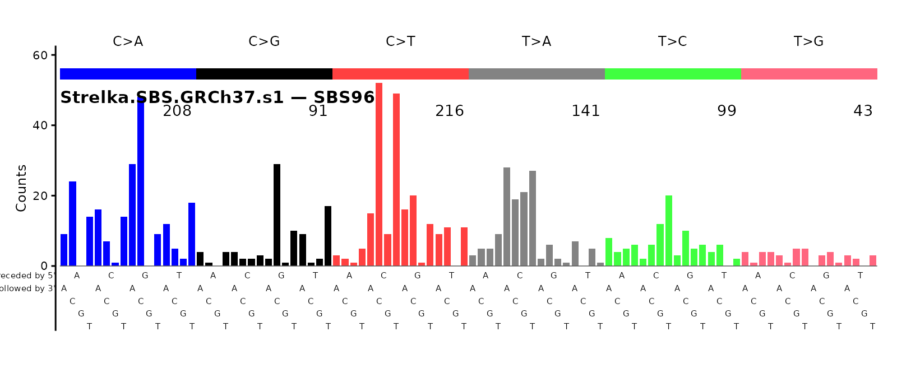
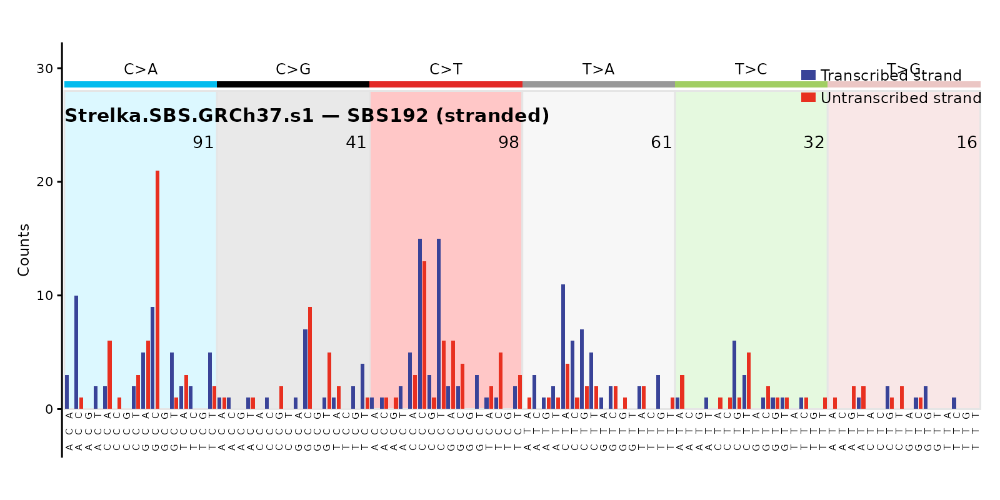
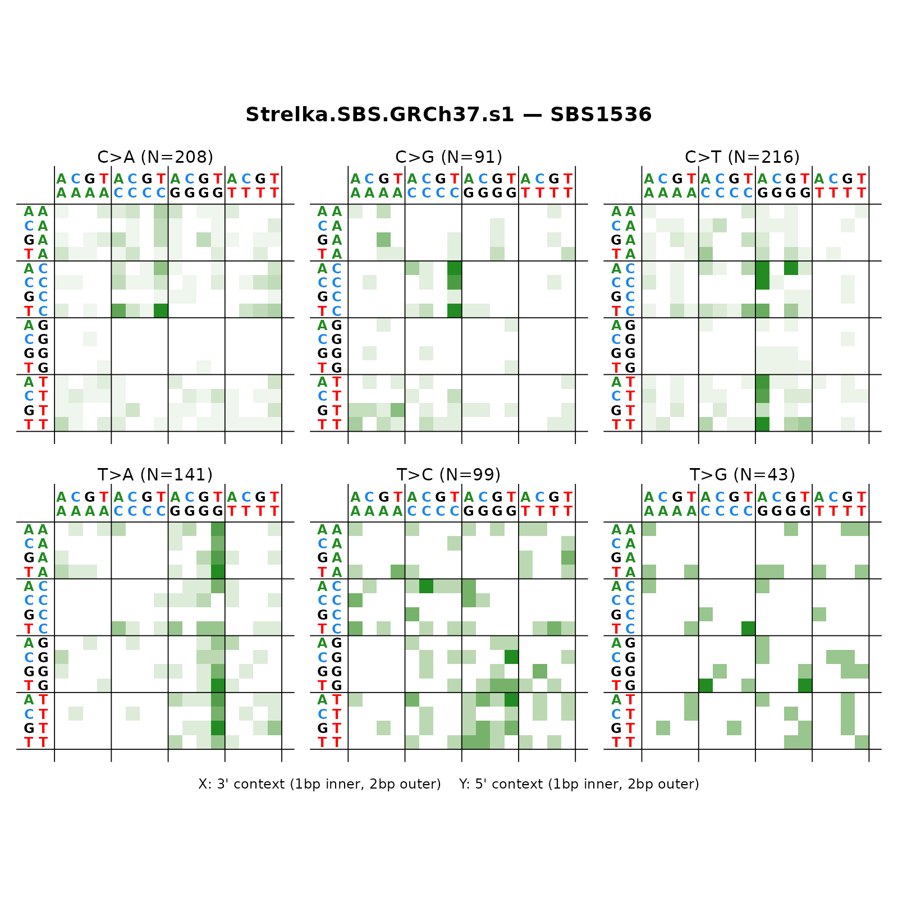
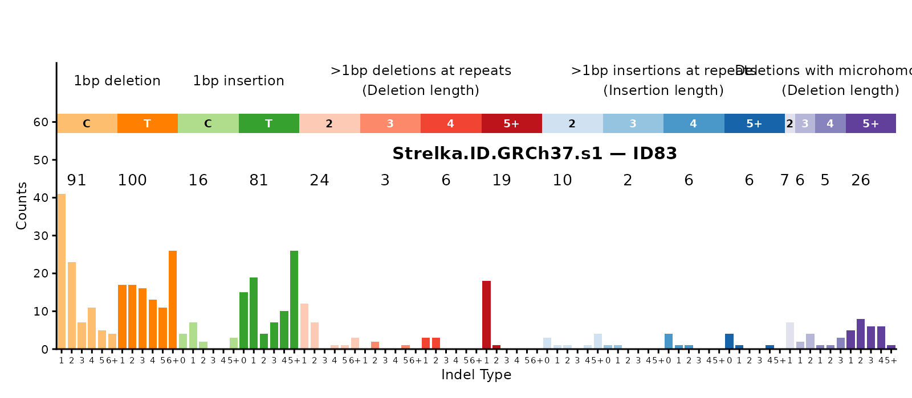
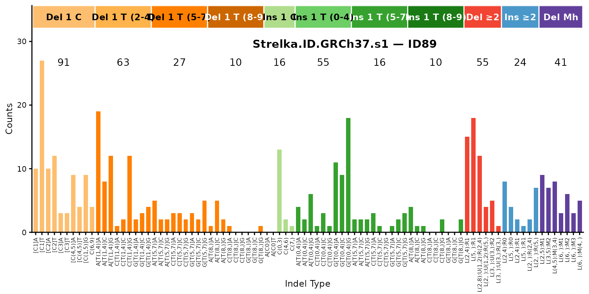
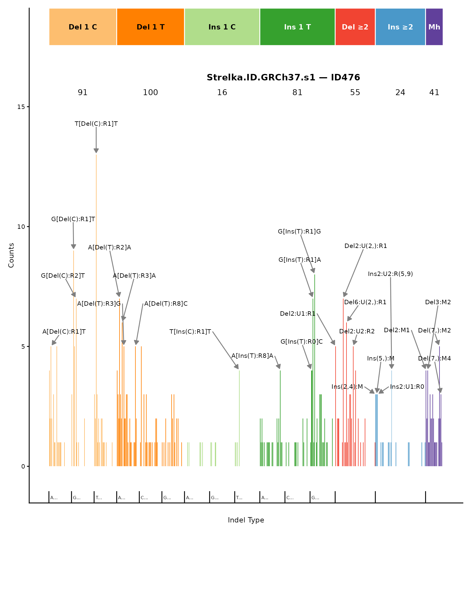
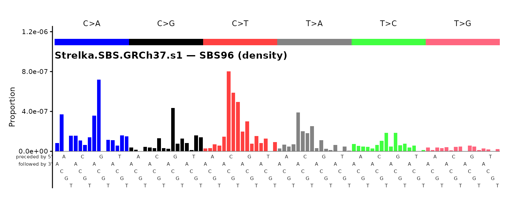

Reading VCFs and Building Mutational-Spectrum Catalogs
Source:vignettes/mSigSpectra.Rmd
mSigSpectra.RmdThis vignette walks through the four-step
mSigSpectra pipeline — read_vcf →
split_vcf → annotate_vcf →
vcf_to_catalog — using a real Strelka VCF that ships with
the package. It then plots each catalog with mSigPlot.
If you do not have the BSgenome package or mSigPlot
installed, the chunks below will be skipped at render time. To
install:
BiocManager::install("BSgenome.Hsapiens.1000genomes.hs37d5")
remotes::install_github("steverozen/mSigPlot")2. Locate test VCFs
Three example VCFs ship with the package: a Strelka SBS file, a Strelka indel file, and a Mutect file (all small subsets, GRCh37 / hg19).
sbs_file <- system.file(
"extdata", "Strelka-SBS-GRCh37", "Strelka.SBS.GRCh37.s1.vcf",
package = "mSigSpectra"
)
id_file <- system.file(
"extdata", "Strelka-ID-GRCh37", "Strelka.ID.GRCh37.s1.vcf",
package = "mSigSpectra"
)
mutect_file <- system.file(
"extdata", "Mutect-GRCh37", "Mutect.GRCh37.s1.vcf",
package = "mSigSpectra"
)3. Read the SBS VCF
read_vcf() returns a data.table with
whatever columns the VCF body contains. We pass
filter = "PASS" to match the Strelka convention.
sbs_vcf <- read_vcf(sbs_file, filter = "PASS")
nrow(sbs_vcf)
#> [1] 798
head(sbs_vcf[, c("CHROM", "POS", "REF", "ALT", "FILTER")])
#> CHROM POS REF ALT FILTER
#> <char> <int> <char> <char> <char>
#> 1: 1 906904 C A PASS
#> 2: 1 1821952 C T PASS
#> 3: 1 1963733 G A PASS
#> 4: 1 2249474 G T PASS
#> 5: 1 2545983 A T PASS
#> 6: 1 2738084 C A PASS4. Split into SBS / DBS / ID sub-tables
split_vcf() partitions rows by
REF/ALT length alone. For a “pure SBS” VCF you
would expect everything in $SBS, but Strelka’s SBS caller
can emit adjacent SBS pairs that the indel caller does not see;
mSigSpectra does not merge them into DBSs (see
“Gotchas” in the README) — they stay as SBSs.
5. Annotate the SBS rows
annotate_vcf(variant_type = "SBS") adds:
-
seq.<N>bases— the flanking sequence context (defaultseq.21bases). - For ref genomes with a shipped transcript-ranges table (GRCh37 /
GRCh38 / GRCm38), the transcript-strand columns
trans.start.pos,trans.end.pos,trans.strand,trans.Ensembl.gene.ID,trans.gene.symbol, plusbothstrandandcount(number of overlapping transcripts).
sbs_ann <- annotate_vcf(sbs_split$SBS, ref_genome = "GRCh37",
variant_type = "SBS")
new_cols <- setdiff(colnames(sbs_ann), colnames(sbs_split$SBS))
new_cols
#> [1] "seq.21bases" "trans.start.pos" "trans.end.pos"
#> [4] "trans.strand" "trans.Ensembl.gene.ID" "trans.gene.symbol"
#> [7] "POS2" "bothstrand" "count"6. Build SBS catalogs
A catalog is a single-column numeric matrix with attributes (no S3 class). One call per resolution.
cat96 <- vcf_to_catalog(sbs_ann, type = "SBS96", ref_genome = "GRCh37",
region = "genome", sample_name = "s1")
cat192 <- vcf_to_catalog(sbs_ann, type = "SBS192", ref_genome = "GRCh37",
region = "transcript", sample_name = "s1")
cat1536 <- vcf_to_catalog(sbs_ann, type = "SBS1536", ref_genome = "GRCh37",
region = "genome", sample_name = "s1")
dim(cat96)
#> [1] 96 1
sum(cat96)
#> [1] 798
catalog_attrs(cat96)
#> $type
#> [1] "SBS96"
#>
#> $counts_or_density
#> [1] "counts"
#>
#> $ref_genome
#> | BSgenome object for Human
#> | - organism: Homo sapiens
#> | - provider: 1000genomes
#> | - genome: hs37d5
#> | - release date: 2011-07-07
#> | - 86 sequence(s):
#> | 1 2 3 4 5 6
#> | 7 8 9 10 11 12
#> | 13 14 15 16 17 18
#> | 19 20 21 22 X Y
#> | MT GL000207.1 GL000226.1 GL000229.1 GL000231.1 GL000210.1
#> | ... ... ... ... ... ...
#> | GL000228.1 GL000214.1 GL000221.1 GL000209.1 GL000218.1 GL000220.1
#> | GL000213.1 GL000211.1 GL000199.1 GL000217.1 GL000216.1 GL000215.1
#> | GL000205.1 GL000219.1 GL000224.1 GL000223.1 GL000195.1 GL000212.1
#> | GL000222.1 GL000200.1 GL000193.1 GL000194.1 GL000225.1 GL000192.1
#> | NC_007605 hs37d5
#> |
#> | Tips: call 'seqnames()' on the object to get all the sequence names, call
#> | 'seqinfo()' to get the full sequence info, use the '$' or '[[' operator to
#> | access a given sequence, see '?BSgenome' for more information.
#>
#> $region
#> [1] "genome"
#>
#> $abundance
#> TTT GTT CTT ATT ACA ACC ACG ACT
#> 142250238 78687790 107617082 129934569 108258537 64600793 14067800 89401111
#> TCT GCT CCT ATA ATC ATG TTG GTG
#> 120134425 78722685 98950493 108767627 74496273 102345885 101674674 82782961
#> CTG CCA CCC CCG TCG GCG CTA CTC
#> 114948303 102519417 64749177 15301553 12406623 13282321 71873805 94271285
#> TTC GTC GCA GCC TCC GTA TTA TCA
#> 106058961 53511169 81041806 66773820 85103213 63617716 108282800 1086315667. Plot SBS catalogs
plot_SBS96(cat96, plot_title = "Strelka.SBS.GRCh37.s1 — SBS96")
plot_SBS192(cat192, plot_title = "Strelka.SBS.GRCh37.s1 — SBS192 (stranded)")
plot_SBS1536(cat1536, plot_title = "Strelka.SBS.GRCh37.s1 — SBS1536")
8. Build and plot ID catalogs
The Strelka indel VCF goes through the same pipeline, with
variant_type = "ID". The annotator left-justifies each
indel, extracts the local repeat / microhomology context, and emits the
three classification strings (COSMIC_83,
Koh_89, Koh_476).
id_vcf <- read_vcf(id_file, filter = "PASS")
id_split <- split_vcf(id_vcf, name_of_vcf = "Strelka.ID.GRCh37.s1")
id_ann <- annotate_vcf(id_split$ID, ref_genome = "GRCh37",
variant_type = "ID")
id_ann[1, c("CHROM", "POS", "REF", "ALT", "COSMIC_83", "Koh_89")]
#> CHROM POS REF ALT COSMIC_83 Koh_89
#> <char> <int> <char> <char> <char> <char>
#> 1: 1 5288645 TG T DEL:C:1:1 [Del(C):R2]A
cat_id83 <- vcf_to_catalog(id_ann, type = "ID83", ref_genome = "GRCh37",
region = "genome", sample_name = "s1")
cat_id89 <- vcf_to_catalog(id_ann, type = "ID89", ref_genome = "GRCh37",
region = "genome", sample_name = "s1")
cat_id476 <- vcf_to_catalog(id_ann, type = "ID476", ref_genome = "GRCh37",
region = "genome", sample_name = "s1")
plot_ID83(cat_id83, plot_title = "Strelka.ID.GRCh37.s1 — ID83")
plot_ID89(cat_id89, plot_title = "Strelka.ID.GRCh37.s1 — ID89")
plot_ID476(cat_id476, plot_title = "Strelka.ID.GRCh37.s1 — ID476")
9. Multiple samples in one call
vcfs_to_catalogs() is a thin wrapper that reads, splits,
annotates, and column-binds catalogs from a list of files.
multi <- vcfs_to_catalogs(
files = c(sbs_file, mutect_file),
types = c("SBS96", "SBS192"),
ref_genome = "GRCh37",
region = "genome"
)
dim(multi$SBS96)
#> [1] 96 2
colSums(multi$SBS96)
#> Strelka.SBS.GRCh37.s1 Mutect.GRCh37.s1
#> 798 173810. Counts ↔︎ density
Convert from raw counts (per category) to mutation density (per megabase of context) using the shipped k-mer abundances:
cat96_density <- transform_catalog(cat96,
target_counts_or_density = "density")
attr(cat96_density, "counts_or_density")
#> [1] "density"
plot_SBS96(cat96_density,
plot_title = "Strelka.SBS.GRCh37.s1 — SBS96 (density)")
11. Collapse from finer to coarser resolutions
cat96_from_1536 <- collapse_catalog(cat1536, to = "SBS96")
all.equal(as.numeric(cat96_from_1536[, 1]),
as.numeric(cat96[, 1]))
#> [1] TRUE12. Catalog I/O
ICAMS-native CSV is the default and only output format today; SigProfiler and COSMIC formats are supported on input.
out_path <- file.path(tempdir(), "Strelka.SBS.GRCh37.s1.SBS96.csv")
write_catalog(cat96, out_path)
cat96_back <- read_catalog(out_path, region = "genome")
identical(as.numeric(cat96), as.numeric(cat96_back))
#> [1] TRUESee also
-
?read_vcf— the caller-agnostic reader. -
?annotate_vcf— sequence context + transcript strand + (for ID) indel justification + classification. -
?vcf_to_catalog— single-call builder dispatching ontype. -
?transform_catalog/?collapse_catalog— counts ↔︎ density and finer-to-coarser collapse. -
?check_and_remove_discarded_variants— optional defensive QC. - The README’s “Gotchas” section documents the cases this pipeline intentionally leaves to the user.